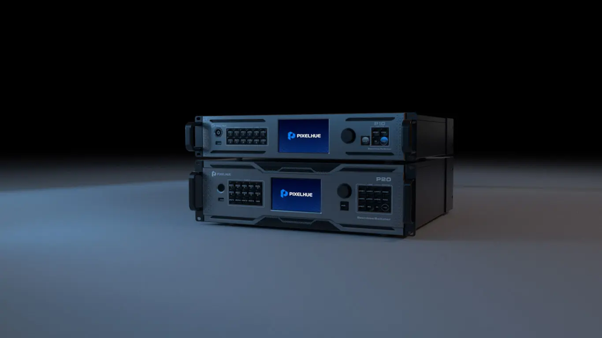
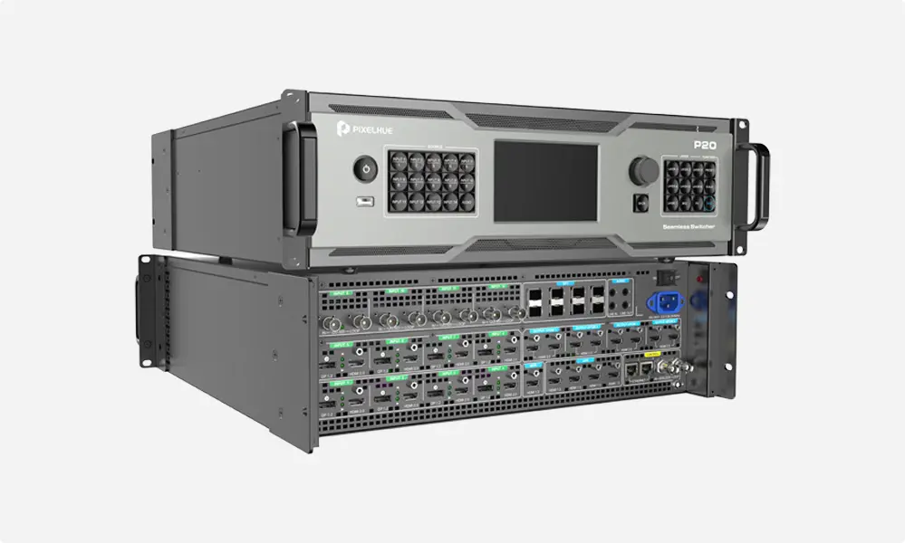

Products catalog
Rental Equipment
-


Pixelhue P20-DS
DescriptionThe Pixelhue P20 is a powerful 4K presentation switcher for demanding live events, broadcasts and large AV productions. It has a modular design and supports up to 12 inputs and 8 outputs , so it fits a wide range of setups. True 4K@60Hz processing and very low latency give a sharp picture and smooth real-time switching. The P20 handles seamless transitions, advanced scaling and multi-layer processing, which makes it a good choice for complex screen layouts.
It supports multiple PGM/PVW outputs, EDID management and custom resolutions, which is great for LED walls, projection mapping and hybrid broadcasts. You can control it from the touchscreen, with software or via third-party protocols. Operators can manage layers, keying and source routing quickly and precisely. Whether it’s a live concert, a corporate event or a TV production, the P20 gives you professional power and flexibility. Rent it for your next production.
- Modular I/O Design with 4K Processing. The P20 has a modular design with up to 12 inputs and 8 outputs and different card types. It processes true 4K@60Hz 10-bit 4:4:4 video for a sharp picture and rich colour, which is ideal for high-resolution LED walls, projection and broadcast. It accepts HDMI, SDI and DisplayPort, so it works with a wide range of sources.
- Advanced Layer Management and Seamless Switching. Each output can have several layers, and you can change the position, size and keying of each one. Seamless switching with very low latency gives smooth transitions, which matters in live productions where timing is everything. Custom resolutions and scaling let you build unusual screen layouts and aspect ratios. Built-in EDID management and automatic signal detection make setup faster.
- Flexible Control and Real-Time Monitoring. You can control the P20 from its built-in touchscreen, with Windows software or via third-party protocols such as TCP/IP. Preview and program monitoring outputs let you check content before it goes on screen. The system fits easily into complex workflows, from touring shows to permanent installations, and its compact, road-ready build is reliable without losing power.
- P20-DS Model with SDI Outputs and Dante over IP. The P20-DS version adds native SDI outputs, which is ideal for broadcast. It also routes audio and control over IP with Dante, so it fits easily into modern networked AV systems. This gives you a flexible setup that can grow with your needs, especially in venues that already use Dante audio. The extra connections make the P20-DS even more versatile for hybrid and distributed productions.
Read full description on product website